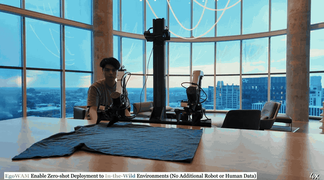
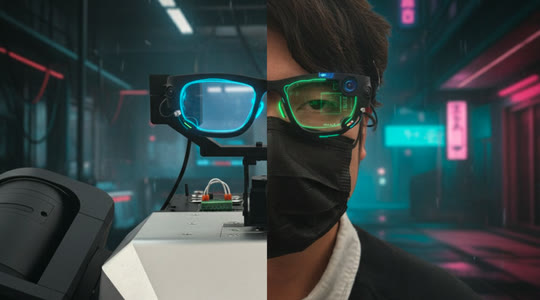

|
Xinchen Yin
I am a second-year M.S. student in Robotics at Georgia Tech, advised by Prof. Danfei Xu.
During my undergraduate studies at the ZJU-UIUC Institute, I was fortunate to be mentored by Prof. Hua Chen and to work with Prof. Gaoang Wang. While at UIUC, I collaborated with Prof. Yunzhu Li, together with Shivansh Patel and Wenlong Huang. I am deeply grateful to all my collaborators and labmates along the way, who have shaped how I think about research.
I am seeking PhD positions and industry research roles starting in Fall 2027. Please feel free to reach out.
Email /
Twitter /
GitHub /
LinkedIn
|
|
Research
My research focuses on scalable, learning-based methods for robot manipulation. I work across the full robotics stack, from hardware and data collection to policy learning, simulation, and real-world deployment. My long-term goals are (1) to enable robots to learn efficiently from Internet-scale data and (2) to equip robots with human-level manipulation capabilities.
Currently, I am interested in:
- Leveraging foundation models for robotics
- Learning from cross-embodiment data
- World action models and world models for robot learning
|
Publications
* denotes equal contribution
|
|

|
EgoWAM: World Action Models Beyond Pixels with In-the-Wild Egocentric Human Data
Baoyu Li*,
Xinchen Yin*,
Mengying Lin,
Yixin Zhang,
Danfei Xu
CoRL, 2026
project
/
arXiv
|
|

|
EgoEngine: From Egocentric Human Videos to High-Fidelity Dexterous Robot Demonstrations
Yangcen Liu,
Shuo Cheng,
Xinchen Yin,
Woo Chul Shin,
Alfred Cueva,
Yiran Yang,
Zhenyang Chen,
Chuye Zhang,
Danfei Xu
CoRL, 2026
project
/
arXiv
|
|
|
A Real-to-Sim-to-Real Approach to Robotic Manipulation with VLM-Generated Iterative Keypoint Rewards
Shivansh Patel*,
Xinchen Yin*,
Wenlong Huang,
Shubham Garg,
Hooshang Nayyeri,
Li Fei-Fei,
Svetlana Lazebnik,
Yunzhu Li
ICRA, 2025
CoRL Workshops (LEAP, LangRob), 2024
project
/
arXiv
|
Service
Conference Reviewer: CoRL, ICRA
Journal Reviewer: IEEE RA-L
|
Misc
Outside of research, I enjoy cooking and good food, especially Hunan (Xiang) cuisine from my hometown. I also enjoy competitive games, especially League of Legends, which has been a big part of my youth since 2013. And I daydream a lot, often lost in random thoughts about everything from big questions to small things.
|
|